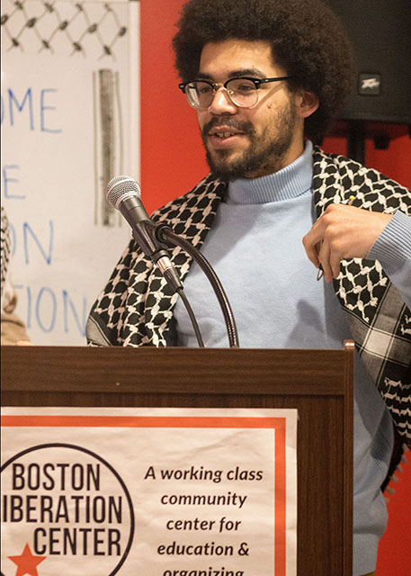
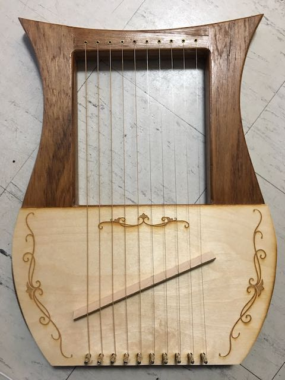
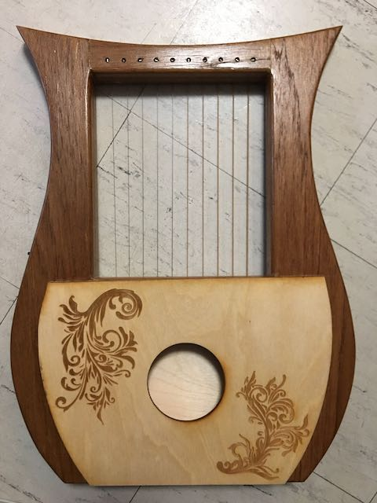

<div class="textcontainer">
<h3>About Me</h3>
<p class="margin"> </p>
<div class="center-row">

<p id="aboutme">
What up peeps. My name is Prince, I'm a senior in the Co-op studying History and African Diaspora Studies
I grew up on the east side North Carolina from working class parents. I'm community organizer on campus
and boston. I voluteer at the Boston Liberation Center, a working class community center in Roxbury.
I spit bars from time to time.
</p>
</div>
<p class="margin"> </p>
I took GENED 1080 in the fall of 2021 and had a great time learning
about 3D printing, laser cutting, and basic electronics. For my final
project in that course, I made this lyre:
<p class="margin"> </p>
<div class="flexrow">


</div>
<p class="caption">(It's about 2 feet tall, for reference.)</p>
<p class="margin"></p>
I also spend a lot of time outside of class working backstage on
theatrical shows. Specifically, I design, program, and operate the
lighting. Through stage lighting, I've learned about 2D drafting with
CAD software and gotten pretty good at ETC console programming.
<p class="margin"> </p>
<div class="flexrow">
</div>
<p class="caption">This is a photo of a ballet show I lit in the spring of 2022.</p>
<p class="margin"></p>
Head on over to my page on [Week 1](./01_intro/index.html) to check out my ideas for my final project!
</div>